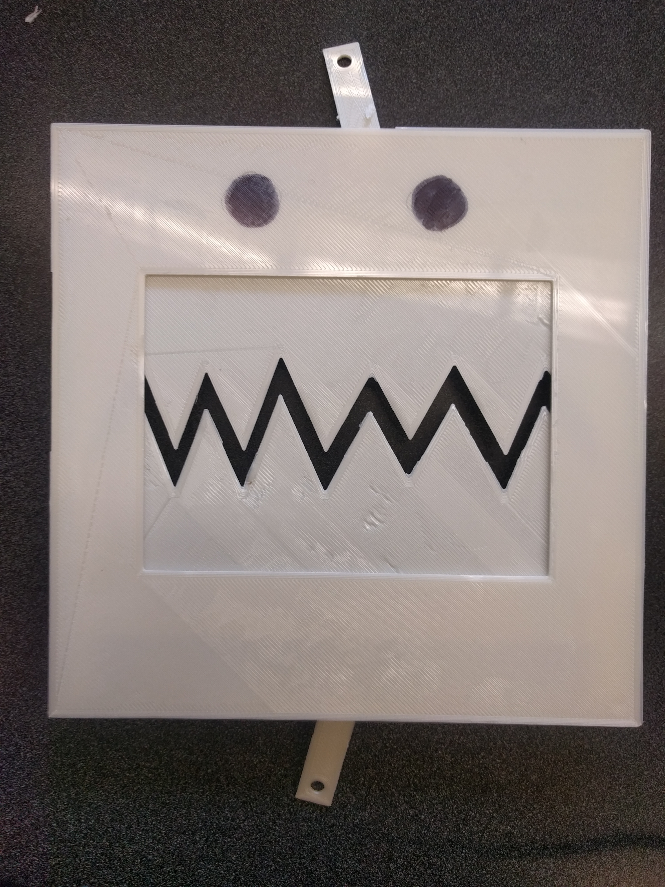
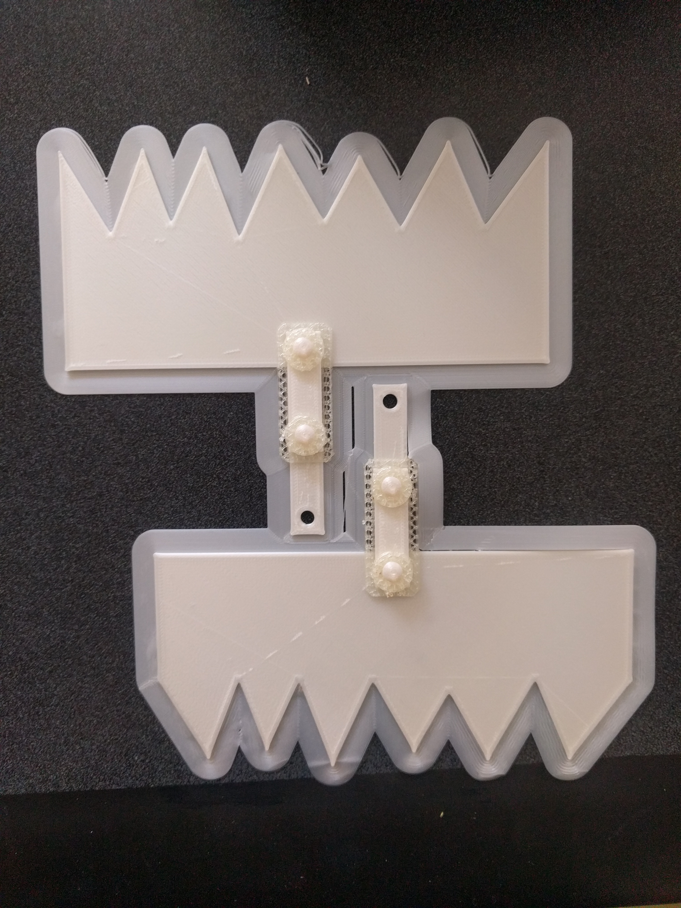
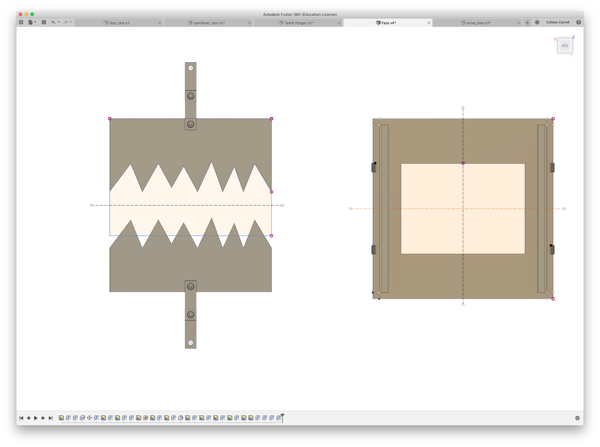
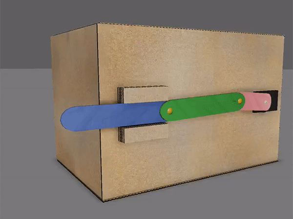
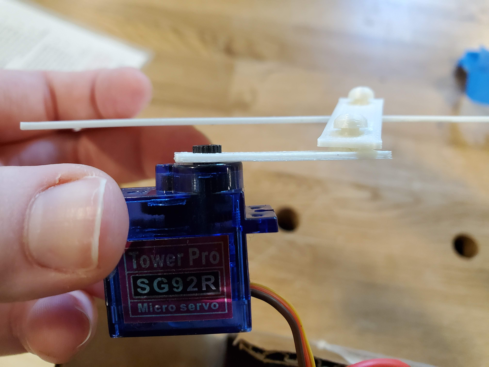
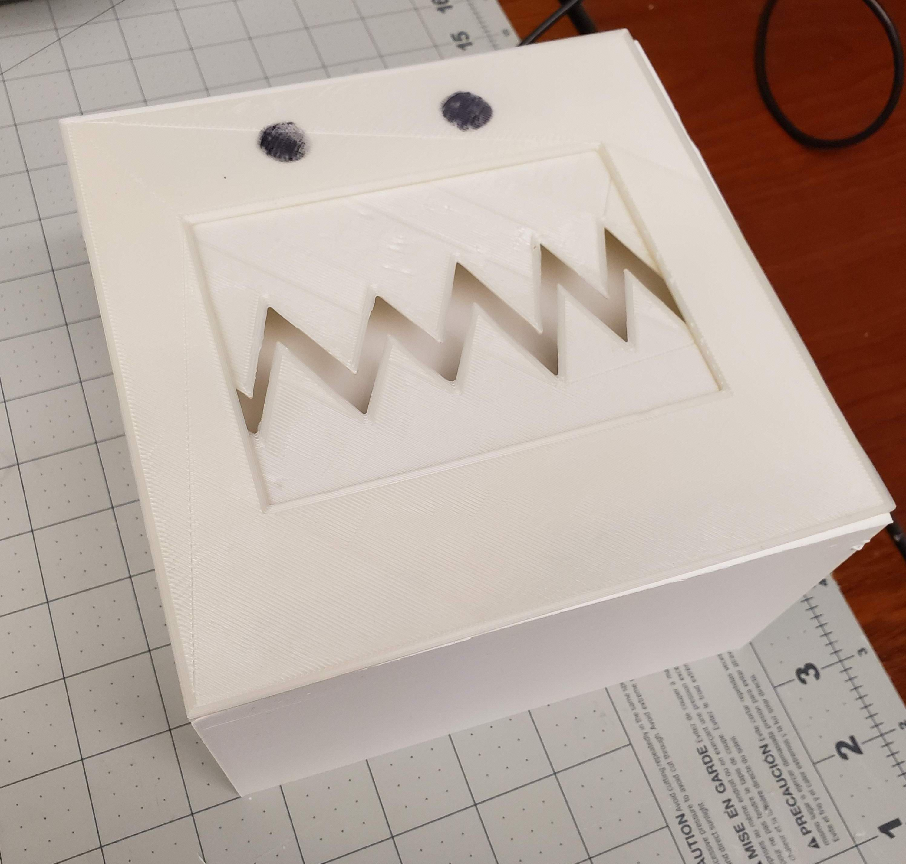
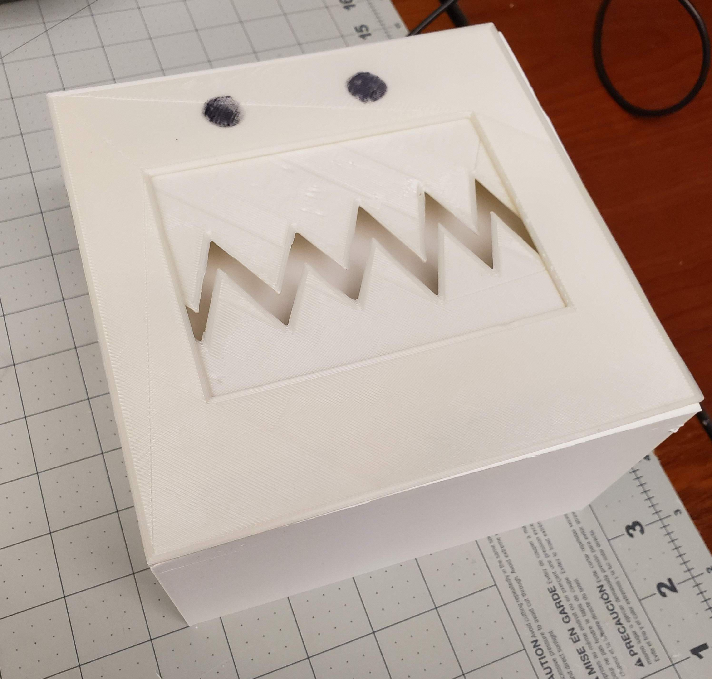

Colleen's Assignment 4!
I made a chomping monster face!

Teeth and Face
The teeth and face were both 3D printed. The teeth have a scissor linkage that was printed in place, using dissolvable PVA for supports.
 The face has rails for the teeth to slide in.

Slider Crank Mechanism
The teeth move via a slider crank mechanism like the exmaple below.
The shaft of the slider-crank is press-fit onto a servo motor.
Without the railing on the back of the face, the teeth don't move linearly.

Slider Crank Mechanism
The teeth move via a slider crank mechanism like the exmaple below.
Enclosure
I printed a box for the whole mechanism and then the servos bodies are pressfit into an insert inside the box. The insert was laser cut out of delrin for a precision fit.
 

All Together
Press the button and the teeth open and close! I did have some problems with too much friction alon ghte rails of the face. I might try different materials, or more of a clearance in order to make it smoother so it can open farther.
Files